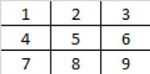

Problem made by Lockheed Martin, is CodeQuest 2017 Problem 17
This problem has a difficulty of 95
Tic Tac Toe is a classic game of logic where the placement of X’s and O’s determines your ultimate fate! Okay, so maybe it isn’t that dramatic but it can be pretty frustrating to lose. The good news is that it is possible to calculate the best next move possible.
Adversarial search is an area of artificial intelligence where the computer (AI) is planning ahead in a world where other agents (players, usually human) are planning against it. This is a common problem found in game theory. Simple games such as tic-tac-toe and checkers are known as zero-sum games of perfect information. Zero-sum games are games in which one player’s gain is exactly balanced by an equal loss to the other player. The most common artificial intelligence algorithm implemented for these types of games is called minimax. Minimax is an algorithm designed to look at the entire game-space and to minimize the possible losses in a worst case scenario. Because games, such as Tic-Tac-Toe, are zero-sum games, minimizing the loss condition will lead to an AI victory over the player (or in the worst case, a draw).
Minimax is evaluated using a tree of all possible board states from the current state of the game to all ending states. For example, at the start of a game of Tic-Tac-Toe, there are 9 child states (for one each move the AI can make). Under each of those states are 8 more states representing the moves the opponent can make. The leaf nodes of the tree can be evaluated based upon whether the player won the game, had a draw game, or lost the game. These utility values are then calculated back up through the tree, minimizing values on the opponents turn (this assumes the opponent always plays the best possible move) and maximizing values on the AI’s turn. Then, if the AI always picks the highest value move, the AI is playing perfectly for the given state of the game board.
The logic for calculating the minimax score for a particular state of tic-tac-toe is as follows:
• If the AI won the game: +1
• If the AI lost the game: -1
• If the game was a draw: 0
• If it’s the AI’s turn and the game isn’t over: choose the maximum value all of child nodes
• If it’s the opponent’s turn and the game isn’t over: choose the minimum value of all child nodes
Jon has been losing a lot of tic-tac-toe games recently. He’s asked you to make him a program where he can input the current state of the board and have the artificial intelligence tell him the best move to he should make for his current situation. Assume Jon is always X’s and the opponent is always O’s. X plays first.

To pick the best move for Jon use the following logic:
• If there’s a winning move, pick it
• Otherwise, pick the highest scoring move based upon the minimax algorithm
• If two moves have the same score or are otherwise equivalent, such as two winning moves, use the following ranking of the Tic-Tac-Toe spaces to determine which one should be used:
The first line of the file Prob17.in.txt will contain a positive integer T denoting the number of test cases that follow. Each test case will have the following input:
• Three lines that each contain three characters, representing the Tic-Tac-Toe board. Asterisks are empty spaces.
2
OOX
X*O
**X
***
***
***
Your program should output the board with the optimal move played as calculated by the minimax algorithm.
OOX
X*O
X*X
X**
***